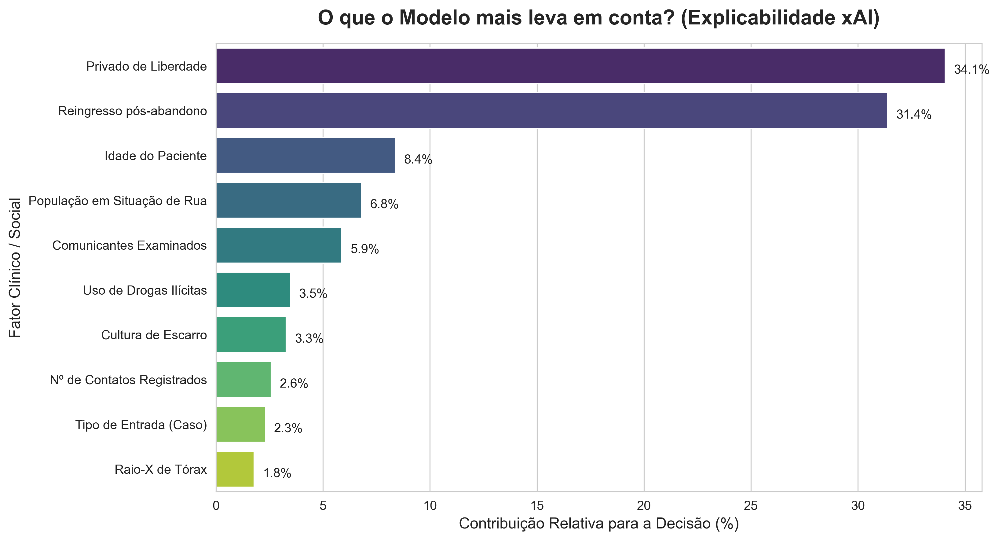

Inteligência Artificial no Combate à Tuberculose
Após o diagnóstico, a não adesão ao tratamento da Tuberculose (LTFU - Lost to Follow-Up) é um dos maiores desafios de saúde pública no Brasil. A interrupção prematura do esquema medicamentoso gera resistência bacteriana e compromete a cura.
Este sistema preditivo foi desenvolvido para identificar, no momento da notificação no SINAN(Sistema de Informação de Agravos de Notificação), quais pacientes apresentam maior risco de abandonar o tratamento. Com essa informação em mãos, os profissionais de saúde podem direcionar recursos, como o Tratamento Diretamente Observado (TDO), para quem mais precisa.
Autopreenchimento: Casos de Estudo Prontos
Clique em um dos perfis abaixo para carregar os dados automaticamente na ficha e simular predições com o modelo (xAI).
Perfil A: Baixo Risco
Idoso, caso novo, diabético, com TDO realizado.
Perfil B: Risco Moderado
Meia-idade, coinfecção HIV, fumante, sem TDO.
Perfil C: Risco Crítico
Jovem, pop. rua, uso de drogas, reingresso.
Ficha de Avaliação de Risco
Insira as informações clínicas e demográficas coletadas na primeira consulta de notificação do paciente.
Aguardando Avaliação
Preencha os campos obrigatórios da Ficha do Paciente e clique no botão "Calcular Probabilidade de Risco" para iniciar a inferência do modelo.
Especificações Científicas do Modelo
Detalhes da modelagem, seleção de variáveis e acurácia clínica
Acurácia do Modelo
O modelo é altamente treinado para focar na Captura de Pacientes em Risco (Sensibilidade). Isso significa que, a cada 100 pacientes que de fato abandonariam o tratamento, o nosso sistema consegue alertar a equipe médica sobre 88 deles antecipadamente. Isso reduz drasticamente a chance de erro médico por "falso otimismo".
Origem dos Dados & Treinamento
- Base de Dados: 562.632 notificações reais do SINAN-TB (Sistema de Informação de Agravos de Notificação), cobrindo o período de 2009 a 2022.
- Objetivo do Modelo: Identificar, no ato de notificação, pacientes com alto risco de abandonar o tratamento antes da cura (6 meses).
- Correção de Viés: Como casos de abandono são minoria (~10%), aplicamos um peso matemático automático que faz o algoritmo prestar quatro vezes mais atenção a eles, reduzindo erros de "falso otimismo".
- Algoritmo: LightGBM — modelo de Gradient Boosting de alto desempenho, amplamente utilizado em competições de dados e sistemas de saúde em produção.
Por Dentro da Caixa Preta (xAI)
Para garantir a confiabilidade clínica, aplicamos a técnica Permutation Importance, que revela quais fatores clínicos e sociais o algoritmo considera mais determinantes ao classificar o risco de abandono de um paciente.

Quanto maior a barra, maior o peso matemático da variável na decisão de predição.
Sobre o Projeto de Predição de Abandono (LTFU)
Contexto científico, objetivos de saúde pública e equipe de desenvolvimento
Contexto de Saúde Pública
A não-adesão ao tratamento da Tuberculose (abandono ou LTFU) é um dos maiores gargalos para o controle epidemiológico no Brasil. Interromper o esquema medicamentoso antes dos seis meses recomendados gera falhas de cura, aumento da transmissibilidade e induz a multirresistência bacteriana aos fármacos de primeira linha (MDR-TB).
Esta plataforma web visa integrar-se como uma ferramenta de triagem ágil na atenção básica de saúde, identificando perfis vulneráveis no ato exato de registro de entrada do paciente, permitindo que a coordenação de vigilância direcione recursos assistenciais escassos (como o Tratamento Diretamente Observado - TDO e cestas básicas) com eficiência maximizada.
Equipe de Desenvolvimento
- Gustavo Rampanelli Modelagem de ML, Infraestrutura e API Backend
- Vinicius Gehring Capellari Líder do Projeto, Documentação Científica e Métricas
- Victor Quadri Validação e Engenharia de Features Clínicas
- João Vitor Burati Estatística Multivariada & Validação SINAN
- Laura Cemin Iora Arquitetura de Produção e Frontend Web